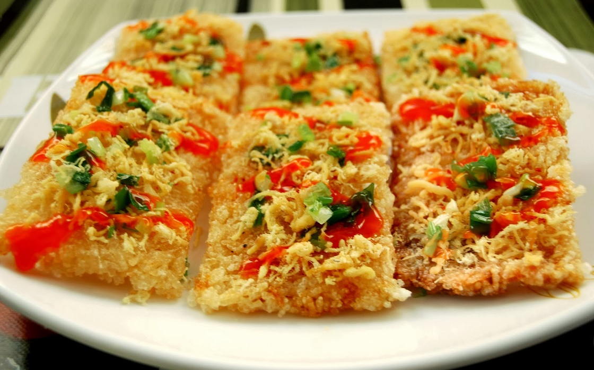

Cơm cháy Ninh Bình
Ẩm thực Ninh Bình
Mỗi món ăn ngon cũng là linh hồn của mỗi mảnh đất. Nhắc tới Ninh Bình, không ai không biết tới cơm cháy. Món ăn bình dị từ gạo mà chất chứa tinh túy, mang đậm bản sắc đất cố đô xưa.
Nếu đặc sản dê núi đã trở thành thương hiệu nổi tiếng từng xuất hiện tại những trung tâm ẩm thực sầm uất cả nước, rượu Kim Sơn có hương thơm độc đáo khó quên thì cơm cháy, thứ đặc sản hàng trăm năm của mảnh đất cố đô lại là món quà cho du khách thập phương khi tới thăm quan Ninh Bình. Cơm cháy giòn, ngon đặc biệt, thể hiện cái hồn, sự tinh túy của hạt gạo. Gần đây, cơm cháy trở thành niềm tự hào của đất cố đô khi được công nhận là món ngon kỷ lục Châu Á trong danh sách 10 món đặc sản nổi tiếng của Việt Nam, trở thành một món quà du lịch cho khách thập phương.
Tương truyền cơm cháy Ninh Bình được hình thành từ cuối thế kỉ 19 do một chàng thanh niên người Ninh Bình tên Hoàng Thăng học được và phát triển từ một món ăn của người Hoa sau đó mở rất nhiều tiệm ăn ở Hà Nội lẫn Ninh Bình. Từ đó món cơm cháy được lưu truyền, phát triển và trở thành một đặc sản của vùng đất cố đô. Cơm cháy cùng các món từ thịt dê núi và rượu Kim Sơn là bữa tiệc độc đáo đầy đủ hương vị từ miền sông, núi Ninh Bình.
Thưởng thức món ăn, người ăn như cảm nhận thấy tinh hoa từ hạt ngọc thực chắt chiu tần tảo của người nông dân đồng bằng Bắc Bộ, tất cả như kết đọng vào trong từng hạt cơm cháy. Xưa, cơm cháy chỉ được chế biến và dùng tại nhà, sau mới được mang ra nhà hàng, phổ biến tới khách thập phương. Ngày nay, cơm cháy đã phát triển đa dạng từ hình thức đến phương pháp chế biến.

Cơm cháy trông đơn giản mà thực hiện cũng lắm kì công. Từ bước chọn gạo, cơm cháy đã thể hiện sự chất lọc một cách đặc biệt. Gạo phải là gạo nếp ngon, loại hạt to tròn, dẻo thơm đem ngâm đãi kĩ sau đó đồ thành xôi. Xôi được ép vào khuôn để tạo thành cháy, cháy được chiên qua dầu cho phồng rồi rắc thêm ruốc tơi để tăng hượng vị. Dầu để chiên phải thật nóng để cháy không bị ngấm nhiều dầu, khi vớt cũng phải vớt thật nhanh tay. Ruốc có lẽ là đồ ăn kèm hợp lý nhất cùng cơm cháy. Ruốc tơi và đậm đà, tăng cường vị bùi thơm cho cơm cháy. Cơm cháy chỉ là một sản phẩm đơn thuần mà gói trong đó tình yêu của những người con xứ sở với sản phẩm quê hương. Những người con Ninh Bình đã sáng tạo để ngày nay món đặc sản này còn được chế biến theo phương pháp đóng gói một cách tiện lợi, biến món đặc sản này thành thức quà dành về biếu tặng người thân cho mỗi du khách từng ghé qua mảnh đất này.
Cơm cháy phổ biến ở mọi cửa hàng, từ sang trọng tới bình dân ở Ninh Bình. Thực đơn cơm cháy, thịt dê luôn là món khách hàng yêu thích nhất khi ghé thăm đất cố đô. Từ lâu, hai món ăn này đã như không thể tách rời. Cơm cháy vàng ruộm, chiên qua dầu nhưng không hề bị ngậy. Cắn miếng cơm cháy nghe giòn tan, vui miệng lẫn vui tai. Chấm miếng cơm cháy với nước sốt thịt dê, cả hương vị đất trời như quyện trên đầu lưỡi. Nhấp một ly rượu Kim Sơn cũng đủ khiến thực khách ngất ngây, lưu luyến phong vị ẩm thực nơi đây.
Ninh Bình đẹp như một bức tranh thủy mặc, những món ăn nơi đây cũng bình dị, đậm tình và mến khách. Cơm cháy là món ăn mang hương vị đất trời, thổi hồn quê Việt Nam trong từng miếng cháy giòn thơm, đậm đà. Chẳng khoa trương mĩ miều, cơm cháy thể hiện giá trị hạt ngọc thực một cách đơn thuần mà đầy đủ, hội tụ trọn vẹn sự tinh tế của ẩm thực đất cố đô.